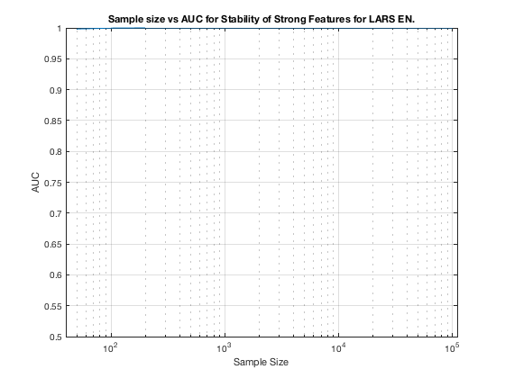

TIE-Net-Weak2. Summary. Elastic Net.
summary_stability_type("ErrNet", 3)
TOTAL COUNTS: Total=1327, Strong=23, Weak=1300, Irrelevant=4
Figure 133. Stability as a predictor for Strong Features for Elastic Net on TIE-Net-Weak2.
___________________________________________________________________________________________

Table 133. Breakdown of Stability by Feature Type for Elastic Net.
___________________________________________________________________
(1) Number Features Repeat (n_fs_rep): number of unique features that were selected in a repeat
(2) Number Features Fold (n_fs_fold): number of unique features that were selected in a fold
(3) Feature Stability ~ Feature Selection Frequency
Sample_Size All_n_fs_rep All_n_fs_fold All_Stability
___________ _______________________ _______________________ ___________________
' 50 ' ' 73.940 +/- 1.151 ' ' 12.778 +/- 0.159 ' ' 0.010 +/- 0.028 '
' 100 ' ' 208.080 +/- 4.502 ' ' 36.364 +/- 0.767 ' ' 0.027 +/- 0.041 '
' 200 ' ' 160.120 +/- 2.470 ' ' 30.690 +/- 0.371 ' ' 0.023 +/- 0.050 '
' 300 ' ' 287.140 +/- 5.518 ' ' 45.600 +/- 0.794 ' ' 0.034 +/- 0.054 '
' 400 ' ' 280.160 +/- 5.547 ' ' 45.824 +/- 0.731 ' ' 0.035 +/- 0.060 '
' 500 ' ' 179.100 +/- 3.530 ' ' 36.978 +/- 0.788 ' ' 0.028 +/- 0.063 '
' 1000 ' ' 119.920 +/- 1.012 ' ' 31.422 +/- 0.201 ' ' 0.024 +/- 0.079 '
' 2000 ' ' 108.340 +/- 0.661 ' ' 34.990 +/- 0.182 ' ' 0.026 +/- 0.095 '
' 5000 ' ' 118.660 +/- 0.732 ' ' 40.558 +/- 0.182 ' ' 0.031 +/- 0.111 '
' 10000 ' ' 106.980 +/- 0.607 ' ' 38.846 +/- 0.164 ' ' 0.029 +/- 0.118 '
' 100000 ' ' 89.000 +/- 0.295 ' ' 35.494 +/- 0.070 ' ' 0.027 +/- 0.117 '
Sample_Size Strong_n_fs_rep Strong_n_fs_fold Strong_Stability
___________ _____________________ _____________________ ___________________
' 50 ' ' 9.740 +/- 0.100 ' ' 3.370 +/- 0.034 ' ' 0.147 +/- 0.141 '
' 100 ' ' 15.120 +/- 0.110 ' ' 5.866 +/- 0.052 ' ' 0.255 +/- 0.150 '
' 200 ' ' 16.720 +/- 0.083 ' ' 7.232 +/- 0.045 ' ' 0.314 +/- 0.191 '
' 300 ' ' 20.060 +/- 0.077 ' ' 8.178 +/- 0.049 ' ' 0.356 +/- 0.205 '
' 400 ' ' 19.460 +/- 0.079 ' ' 9.478 +/- 0.064 ' ' 0.412 +/- 0.195 '
' 500 ' ' 19.420 +/- 0.073 ' ' 9.780 +/- 0.055 ' ' 0.425 +/- 0.226 '
' 1000 ' ' 22.380 +/- 0.039 ' ' 13.210 +/- 0.068 ' ' 0.574 +/- 0.149 '
' 2000 ' ' 22.680 +/- 0.026 ' ' 16.246 +/- 0.055 ' ' 0.706 +/- 0.116 '
' 5000 ' ' 23.000 +/- 0.000 ' ' 19.192 +/- 0.040 ' ' 0.834 +/- 0.075 '
' 10000 ' ' 23.000 +/- 0.000 ' ' 20.596 +/- 0.033 ' ' 0.895 +/- 0.058 '
' 100000 ' ' 23.000 +/- 0.000 ' ' 20.322 +/- 0.029 ' ' 0.884 +/- 0.100 '
Sample_Size Weak_n_fs_rep Weak_n_fs_fold Weak_Stability
___________ _______________________ _______________________ ___________________
' 50 ' ' 63.180 +/- 1.088 ' ' 9.186 +/- 0.143 ' ' 0.007 +/- 0.009 '
' 100 ' ' 191.140 +/- 4.440 ' ' 30.056 +/- 0.736 ' ' 0.023 +/- 0.019 '
' 200 ' ' 141.600 +/- 2.439 ' ' 23.032 +/- 0.352 ' ' 0.018 +/- 0.020 '
' 300 ' ' 265.280 +/- 5.482 ' ' 37.078 +/- 0.772 ' ' 0.029 +/- 0.019 '
' 400 ' ' 259.200 +/- 5.500 ' ' 36.068 +/- 0.683 ' ' 0.028 +/- 0.021 '
' 500 ' ' 158.160 +/- 3.492 ' ' 26.836 +/- 0.768 ' ' 0.021 +/- 0.018 '
' 1000 ' ' 96.480 +/- 1.002 ' ' 18.036 +/- 0.174 ' ' 0.014 +/- 0.022 '
' 2000 ' ' 84.500 +/- 0.649 ' ' 18.552 +/- 0.159 ' ' 0.014 +/- 0.027 '
' 5000 ' ' 94.500 +/- 0.727 ' ' 21.082 +/- 0.164 ' ' 0.016 +/- 0.030 '
' 10000 ' ' 82.820 +/- 0.600 ' ' 17.910 +/- 0.142 ' ' 0.014 +/- 0.024 '
' 100000 ' ' 64.660 +/- 0.295 ' ' 14.810 +/- 0.073 ' ' 0.011 +/- 0.021 '
Sample_Size Irrelevant_n_fs_rep Irrelevant_n_fs_fold Irrelevant_Stability
___________ ___________________ ____________________ ____________________
' 50 ' ' 1.020 +/- 0.020 ' ' 0.222 +/- 0.005 ' ' 0.056 +/- 0.031 '
' 100 ' ' 1.820 +/- 0.022 ' ' 0.442 +/- 0.008 ' ' 0.110 +/- 0.022 '
' 200 ' ' 1.800 +/- 0.024 ' ' 0.426 +/- 0.008 ' ' 0.106 +/- 0.013 '
' 300 ' ' 1.800 +/- 0.021 ' ' 0.344 +/- 0.006 ' ' 0.086 +/- 0.019 '
' 400 ' ' 1.500 +/- 0.023 ' ' 0.278 +/- 0.005 ' ' 0.069 +/- 0.028 '
' 500 ' ' 1.520 +/- 0.028 ' ' 0.362 +/- 0.010 ' ' 0.090 +/- 0.017 '
' 1000 ' ' 1.060 +/- 0.020 ' ' 0.176 +/- 0.004 ' ' 0.044 +/- 0.008 '
' 2000 ' ' 1.160 +/- 0.017 ' ' 0.192 +/- 0.003 ' ' 0.048 +/- 0.014 '
' 5000 ' ' 1.160 +/- 0.017 ' ' 0.284 +/- 0.005 ' ' 0.071 +/- 0.011 '
' 10000 ' ' 1.160 +/- 0.017 ' ' 0.340 +/- 0.007 ' ' 0.085 +/- 0.047 '
' 100000 ' ' 1.340 +/- 0.020 ' ' 0.362 +/- 0.007 ' ' 0.091 +/- 0.022 '